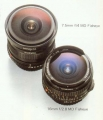

Minolta MD 7.5/4 Fisheye，测光连动自动光圈
圆形鱼眼镜头里最NB的一只。NIKON的6/2。8等笨重无比的家伙完全不是对手。
小巧 金属 质感 结实 便宜 细腻的变形
难找，虽然总算找到了
镜头拿到手里，才体会到什么是所谓的顶级镜头。全金属打造，内置滤镜，连镜身上的滤镜环都是金属的，甚至一个金属的镜头盖，镜片采用了特殊折射率的玻璃。手感极好，非常稳重扎实的感觉。镀膜极为漂亮，黑沉沉的，在阳光下看去，太阳只是一个很小的亮点，其抗玄光能力可见一斑。八十年代中叶以前的日本工业品，正是日本工业制造水平相对成熟，而其国人亦励精图治，企图占领世界工业强国一席之地的时代，看这个镜头扎实的用料，考究的做工，不是九十年代以后的日本产品可比拟的。上世纪九十年代，日本经济停滞不前，工业界亦偷工减料以降低成本，坛内诸友对其相机镜头大量采用廉价塑料，恐怕也深有体会吧。 焦距固定在4 inch， 没有调焦环，转动镜身上的调焦环实际上是转换滤镜。当然，对鱼眼镜头来讲，景深几乎是无穷远，调焦已经没有什么意义了。所以，操作性只能给满分，因为你只需考虑构图和爆光拍摄即可，镜头本身没有没有调焦的问题。 成象是圆图，180度视角，所以，你要很小心，不要把自己的脚照进去。使用三脚架时，我总是费了很大的劲才避免把脚架的腿照进去，我有一张照片，居然把托镜头的两个手指照了进去。成象从中心到边缘都极为锐利，全开光圈时，边缘部分也可以接受。想一想加上Nikon的那个鱼眼镜头，世界上只有两颗镜头能够产生180度视角的圆图，作为Minolta的用家，难道你还有什么苛求吗？我见过Nikon 995用鱼眼附件镜头拍的照片，简直不是一个档次可以相提并论的。那颗真正的Nikkor鱼眼镜头，至今无缘得见，那恐怕是天价了。 这个镜头的另外一个好处是转180度拍两张照片，就可以合成360度的全景照片。网上据说有这样的软件，但我没有试过。 至于成象分格，色彩荡漾着淡淡的暖意，这个镜头有着Minolta一贯的油画般细腻的感觉。你可以说Minolta没有Nikkor镜头锐利，但你无可否认Minolta独具那种特别的味道。 说到价钱，各位可能都比较好奇。看1983年的报价，时价MD7.5mm/f4鱼眼15万日元，可以作为参照的是MD 16mm/f2.8鱼眼约为一半8万日元，比它贵的也就是MD 400mm/f5.6 时价28万日元，600mm/F6.3 时价45万日元，800mm/F8时价24万日元，1600mm/F11 时价60万日元。真不知道何年何月能收集到这样的古董大炮。 如果年代久远，诸位对此还没有概念的话，可以对照一下，当今在无忌网上炒得很热的35mm/f1.8，时价不过区区4万日元，那个只听说，没几个人见过的MD 135mm/F2时价9万日元，MD 200mm/F2.8时价9万日元，至于那些个杂七杂八的而又不少人心向往之的什么50mm/f1.2, 28mm/f2, 24mm/f2.8，85mm/f2 之类，相形之下，不提也就罢了。 最后，在本坛六项点评指标之外，我想还应该为这个镜头特设一项“趣味性”评比。我的打分是趣味性5.5分，考虑到这个镜头的性价比一项，实在是不好意思给满分，这一项也算是补偿吧，多给0.5分，补足综合评价5分，以使我心爱的镜头位列于顶级镜头的庙堂之上。以此言结束本文。 [blacom 编辑于 2002-05-12 20:49]
A unique, rare and special lens! Collectible. A MUST for Minolta manual fans. [blacom 编辑于 2002-05-12 20:41]
还没发现。只有感慨自己技术不好，控制构图能力有待提高，以发挥出它应有的能量。 [blacom 编辑于 2002-05-12 20:41]